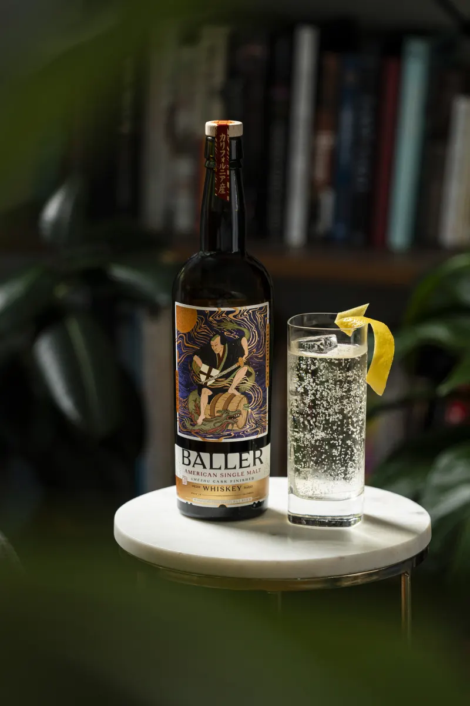

Shop Highball
Chris Lane · Ramen Shop, Oakland
- 1½ oz
- Baller American Single Malt
- 4½ oz
- club soda
- lemon oil
Stir the Baller in a highball glass with ice for five seconds. Add seltzer and give it one full stir. Express the lemon over the drink, then discard the peel or use it as a garnish.